|
|
|
| Ana
Sayfa | Önceki
Sayfa | Sonraki Sayfa |
Otoinþa
Teknolojileri > Tabaka
Yýðma > Kes + Yapýþtýr:
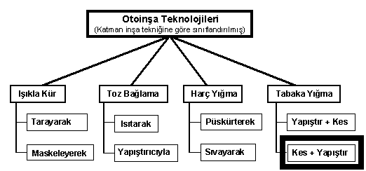
Not: Þemadaki baþlýklarý týklayarak, direkt açýklama sayfalarýný görebilirsiniz.
Bu teknikte, önce tabakalar
çeperlerinden kesilir ve sonra bir önceki katmana yapýþtýrýlýr.
Kes + Yapýþtýr tekniði, mimari maketlerin zemininde bulunan
topografik (dað, tepe gibi yeryüzü þekilleri) modellerin
tabakalar halinde kesilip birbiri üstüne yapýþtýrýlarak
yapýlmasýna çok benzelik gösterir.
Bu yöntemin diðer tabaka
yýðma yönteminden avantajý, destek malzemesi olarak ayrý
bir tabaka malzemesinin kullanýlmasýna imkan vermesidir.
Bu sayede desteklerin sonradan kaldýrýlmasý kolay olabilir.
Bu tekniðin dezavantajý ise, kesilen katmanlarýn inþa
halindeki yüzeye hassas bir þekilde konumlandýrýlarak
yapýþtýrýlabilmesindeki güçlüktür.
Bu tekniði kullanan uygulamalarýn
çoðunda, otomatik olarak kesilen tabakalarýn yapýþtýrýlmasý
manuel olarak gerçekleþtirilir:
- CAM-LEM
Inc., (ABD)
- Ennex,
(ABD), Offset Fabbing
- Schroff
Development Corp., (ABD), JP System 5
- Boxford
Ltd., (Ýngiltere), RapidPRO
- Gilmore
Engineers Pty Ltd., (Avustralya), TruSurf
- Sparx
AB, (Ýsveç), HotPlot
- CIRTES
(Fransa), Stratoconception
- Custom
Motion Inc. (ABD) customLAM
|
|
CAM-LEM
Ekim 1994 tarihinde ABD Ordusu'ndan aldýðý maddi destekle
kurulmuþ ve Ar-Ge çalýþmalarýný Case Western Reserve
University ve diðer bazý üniversite ve araþtýrma kuruluþlarýyla
ortak yapmýþtýr. CAM-LEM, "Computer-Aided Manufacturing
of Laminated Engineering Materials" yani "tabaka
halindeki mühendislik malzemelerinin bilgisayar destekli
imalatý" anlamýna gelmektedir. Case Western Reserve
Üniv.'sinden Dr. Arthur H. Heuer, Dr. James D. Cawley
ve Dr. Wyatt S. Newman CAM-LEM prosesini tasarlamýþ
ve patent için baþvurmuþlardýr. Ayný kiþiler CAM-LEM
firmasýnýn kurucu ve yöneticileridir. CAM-LEM, geliþtirtiði
otoinþa cihazýný kullanarak Þubat 2000'den itibaren
seramik ve metal parça imalat hizmetleri vermeye baþlamýþtýr.
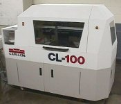
CL-100 modeli otoinþa cihazý 150x150x150mm inþa
hacmine sahiptir. CL-100 makinesi tek bir otomatik inþa
çevriminde 5 farklý tip (kimyasal özellik veya kalýnlýk
olarak) malzemeyi kullanabilir. Destek yapýsý olarak
ise sinterleme sýrasýnda yanarak bünyeden atýlabilen
"fugitive" malzemeler kullanýlýr. Bu sayede
inþa edilen parçalarda iç boþluklar ve kanallar oluþturulabilir.
Ýnþa sýrasýnda 0.1-0.6 mm veya daha kalýn katmanlar
kullanýlýr. Sinterleme sýrasýnda, malzemeye göre %12-18
arasýnda deðiþen çekmeyi kompanse edecek þekilde parçalar
biraz büyük þekilde inþa edilir.
CAM-LEM
Prosesi:
|
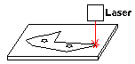
|
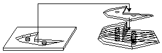
|
| 1-
Lazer ile, bilgisayar kontrollü olarak seramik veya
metal toz karýþýmlý ham katmanlar kesilir. |
2-
Kesilen katmanlar vakumlu robotik manipulatörlerle
otomatik olarak üst üste eklenir. Ayný katmanda
birden çok farklý malzeme kullanýlabilir. Destek
amacýyla sinterleme sýrasýnda yanabilen uçucu (fugitive)
malzemeler kullanýlýr.
|
|
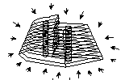
|
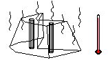
|
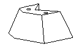
|
| 3-
"Green state" ismi verilen piþmemiþ haldeki
ham parçaya sýcak ortamda basýnç uygulanarak katmanlar
arasý yapýþma saðlanýr. Buna "lamination"
ismi verilir. |
4-
Parça, sýcaklýk kontrollü bir fýrýnda tam yoðunluk
ve monolitik bir yapýya eriþinceye kadar sinterlenir.
Bu esnada %12-18 çekme olur. |
5-
Sinterleme sonrasý parça %100 yoðunluða ve yüksek
mukavemete eriþir. |
Aþaðýda,
CAM-LEM cihazýyla inþa edilmiþ bazý seramik parça örnekleri
görülmektedir:
|
|
Automated
Fabrication isimli kitabýn yazarý Marshall Burns
tarafýndan kurulmuþ olan Ennex firmasý, OffsetT Fabbing
ismi verilen yeni bir otoinþa cihazýný geliþtirme çalýþmalarýný
sürdürmektedir. Aðustos 1996 tarihinde basýn duyurusu
yapýlan OffsetT Fabbing konusunda Marshall Burns 5,514,232
ve 5,879,489 numaralý iki ABD patenti de almýþtýr. "Genie
Studio Fabber" markasý altýnda üretilecek cihazýn
piyasadaki benzerlerinden 20 kat daha hýzlý çalýþmasý
hedeflenmektedir.
JP5
sisteminin mucidi, University of Utah'dan Prof. Charles
Thomas bu sistemin daha da geliþtirilmesi konusunda
Ennex ile çalýþmaktadýr.
OffsetT Fabbing prosesi:
Bir
býçak (knife) kullanýlarak destekleyici taþýyýcý (carrier)
üzerindeki ince tabaka halindeki inþa malzemesi kesilir.
Kesim sonrasýnda taþýyýcý þerit inþa edilmekte olan parçanýn
üzerine getirilerek kesilen parçalar yüzeye yapýþtýrýlýr.
Sonra taþýyýcý þerit kaldýrýlarak yüzey bir sonraki tabaka
yapýþtýrýlmasý için hazýr hale getirilir.
Aþaðýda,
prototip safhasýndaki bir cihazla inþa edilmiþ iki model
görülmektedir:
|
YARI
OTOMATÝK SÝSTEMLER:
Yukarýda
gösterilen tam otomatik cihazlara ek olarak ayný temel
prensibi paylaþan fakat kesilen katmanlarýn manuel olarak
birleþtirildiði birçok sistem de mevcuttur. Diðerlerine
kýyasla çok düþük maliyetle üretilebildikleri için cazip
olan bu sistemler özellikle eðitim amaçlý olarak üniversitelerde
yaygýn uygulama alaný bulmuþlardýr: |
University of Utah'dan
Prof. Charles Thomas JP5
sisteminin mucididir.
| 5,000
USD altýnda fiyata sahip ilk otoinþa sistemi olan
JP Systyem 5, ABD'nde Schroff Development Corp.
tarafýndan geliþtirilmiþ ve daha ziyade üniversitelerde
eðitim amacýyla kullanýlmaktadýr. Tek yüzü yapýþkanlý
olan kaðýtlar özel bir yazýlým ve standart bir PC
kontrollü kesici kullanýlaraký kesilir ve inþa iþlemi
ise manuel olarak yapýlýr. Genellikle bir parça
CAD yazýlýmýnda alt parçalara bölünür ve her yaprakta
birden fazla parçanýn katmanlarý bir seferde kesilir.
Üste saðdaki resimde bir yaprakta tek parçaya ait
6 kesit görülmektedir. Referans pimleri kullanýlarak
katmanlar arasý kayma azaltýlýr. Yapýþtýrma sonrasý
taþýyýcý kaðýt alýnýr... |
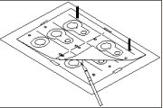
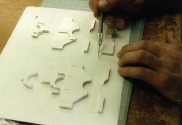 |
| 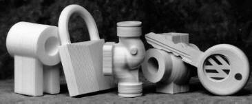Soldan
saða 3. sýrada duran model 23 yapraktan kesilen
370 katmandan oluþmuþ ve 3 saatte inþa edilmiþtir.
Bu model 6 parça halinde inþa edilmiþ ve sonra manuel
olarak birbirlerine yapýþtýrýlmýþtýr. |
|
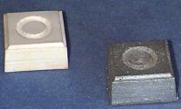
|
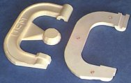
|
|
Solda
master model, saðda ise bu model kullanýlarak
hassas dökümle imal edilmiþ metal parça görülmekte.
|
Yukarýda, kum döküm kalýp üretiminde kullanýlacak
bir model örneði görülmektedir.
|
|
| 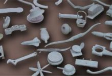ABD
tabanlý JP Systyem 5 benzeri olan
bu düþük maliyetli sistem de daha ziyade üniversitelerde
eðitim amacýyla kullanýlmaktadýr. Tek yüzü yapýþkanlý
olan kaðýtlar özel bir yazýlým ve standart bir PC kontrollü
kesici kullanýlarak kesilir ve inþa iþlemi ise manuel
olarak yapýlýr. Genellikle bir parça CAD yazýlýmýnda alt
parçalara bölünür ve her yaprakta birden fazla parçanýn
katmanlarý bir seferde kesilir. Alttaki resimlerde bir
cep telefonu kapak modelinin inþa safhalarý görülmektedir.
|
|
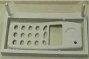
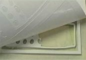
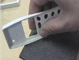
|
|
Solda: katmanlardaki
kaymayý önlemek için iki adet pim kullanýlmýþtýr. Ortada:
taþýyýcý yapraktan kesilen inþa katmanlarýnýn yüzeye
yapýþtýrýlmasý görülmektedir. Saðda: Ýnþa sonrasý parça
yüzey kalitesini arttýrmak için zýmparalanabilir.
Ayný sistemle
imal edilmiþ prototip kalýplar vakum form iþlemine ve
düþük basýnçlý plastik enjeksiyona da dayanabilirler.
|
|
Avustralya'da Raymond Hope isimli bir öðrencinin doktora
tez çalýþmasý olarak baþlayan bu proje daha sonra Gilmore
Engineers Pty Ltd., tarafýndan ticari hale
getirilmiþtir. Sistemin satýþý yerine model üretim servisi
verilmektedir. Bu teknikte 10mm veya daha kalýn tabakalar
halinde gelen köpük malzeme çeperlerinden kesilerek
manuel olarak yapýþtýrýlýr. Sistem özellikle büyük boylu
modelleri düþük maliyetle inþa etmeye müsaittir. Ýnaþa
sýrasýnda kullanýlan katmanlar çok kalýn olduðu için
yüzeylerde merdiven etkisini kaldýrmak amacýyla çeperler
eðimli olarak kesilir. Ayný zamanda geometriye baðlý
olarak tek bir inþa sýrasýnda farklý kalýnlýklarda tabakalar
kullanýlabilir. Yüzey eðimlerinin hýzla deðiþtiði bölgelerde
ince, yavaþ deðiþtiði bölgelerde ise kalýn tabaka kullanýlarak
inþa hýzý ve kalitesi arttýrýlýr. Polisitren (polystyrene)
köpük tabakalarýn kesimi için 5 eksenli bir su jeti
kesicisi kullanýlýr. Yüzey eðiminin kolay hesaplanabilmesi
için, birçok sistemde kullanýlan STL formatýnýn yerine
NURBS (Non-Uniform Rational B-Spline) formatýnda 3D
yüzey CAD modelleri hesaplamada kullanýlýr.
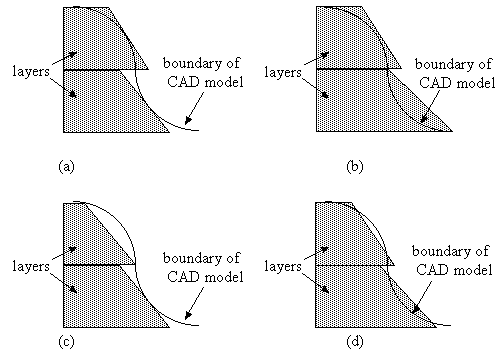
CAD yüzeyine ve uygulanan stratejiye baðlý olarak katmanlarýn
4 farklý metodla kesilebileceðini gösteren bir çizim
yukarýda gösterilmiþtri. Bu konuda detaylý bilgi ve
hesaplamayla ilgili gerekli formüllere aþaðýdaki makalelerden
eriþilebilir. Bu makalelerin üçünün online versiyonlarý
da mevcuttur:
- Hope,
R.L., Roth, R.N., Riek, A.T. "Rapid Generation
of Large Objects", Proc. First Asia/ Pacific
Conference on Rapid Product Development, QMI, Brisbane,
1995.
- Hope,
R.L., Roth, R.N., Riek, A.T. "Layer
Building With Sloping Edges For Rapid Prototyping
Of Large Objects", Proc. 5th European Conference
on Rapid Prototyping and Manufacturing, Helsinki,
Finland. 4-6 June 1996.
- Hope,
R.L., Jacobs, P.A, Roth, R.N. (1997) "Rapid
prototyping with sloping surfaces", Rapid
Prototyping Journal, vol 3, no.1. pp 12-19. (Rapid
Prototyping Journal tarafýndan 1997'nin en iyi makalesi
seçilmiþtir)
- Hope,
R.L., Roth, R.N., Jacobs, P.A (1997) "Adaptive
slicing with sloping layer surfaces", Rapid
Prototyping Journal, vol 3, no.3. pp 89-98.
Solda
görülen 1692 mm x 660 mm x 1274 mm boyutlarýndaki yunus
modeli 10, 20, ve 30 mm kalýnlýðýnda 142 adet polisitren
köpük tabakalarýndan inþa edilmiþtir. Bu katmanlar 5 eksenli
bir su jetli kesici tarafýndan 4 saatte Queensland Ýmalat
Enstitüsü'nde kesilmiþlerdir. Manuel montaj ise bir kiþinin
3 saatini almýþtýr. Ayný modelin SLA 500 ile parçalar
halinde üretilip monte edilmesinin 10 gün alacaðý hesaplanmýþtýr.
Saðda, yüzey iþlemleri ve boyama sonrasý model
görülmektedir.
|
|
HotPlot
sistemi, birçok patent ve firma sahibi Ýsveçli mucit
Ralf Larson tarafýndan geliþtirilerek 1991'de kurduðu
Sparx AB firmasý bünyesinde ticari hale gelmiþtir.
Az miktarda satýþ gerçekleþtirdikten sonra 1995'de
bu firmanýn faaliyetlerini durduran Larson, ardýndan
ýsýtarak toz baðlama prensibine göre çalýþan otoinþa
cihazlarý üzerine araþtýrma yapmaya baþlayarak
Arcam
AB ve SpeedPart
firmalarýný kurmuþtur. Larson ve kurucusu olduðu þirketler
hakkýnda www.swedecopter.se
adresinden ayrýntýlý bilgi alýnabilir.
Hot
Plot sistemi, AutoCAD HPGL formatýnda aldýðý kesit
verilerine baðlý olarak 1 mm'lik kendinden yapýþkanlý
polystyrene tabakalarý ýsýtýlmýþ bir elektrot ile
düz yataklý bir A3 çizici (flat-bed pen plotter) kullanarak
keser. Bu sistemde standart bir çiziciye kalem yerine
sýcak elektrot baðlanmýþtýr. Tabakalar kesildikten
sonra bir fikstür yardýmýyla manuel olarak üst üste
yapýþtýrýlarak parçanýn inþasý tamamlanýr.
| Soldaki
resimde Hot Plot sistemi ve HPGL verinin yüklendiði
3.5" magnetik sürücü, resmin yukarýsýnda
ise kesilen tabakalarýn manuel olarak yapýþtýrýldýðý
fikstür görülmektedir. Saðda, Hot Plot kesicisindeki
ýsýtýlmýþ elektrot kalemi gözükmektedir. |
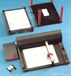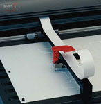 |
| Solda,
Volvo için yapýlmýþ bir motor baðlantý destek
parçasý, saðda ise SAAB için tasarlanmýþ bir yað
tankýna ait Sparx Hot Plot ile inþa edilmiþ modeller
görülmektedir. |
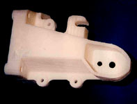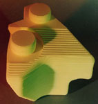 |
|
|
1990'dan
itibaren konuyla ilgili çalýþan Claude BARLIER ve ekibi,
1992 yýlýnda Fransa'da kurulan Avrupa Hýzlý Prototip
Merkezi CIRTES ile yaptýklarý iþbirliði ile Stratoconception
sistemini geliþtirilmiþlerdir. Bu ekip, konuyla ilgili
birçok Fransýz ve Avrupa patenti almýþ ve 1991'den bu
yana birçok makale yayýnlamýþlardýr.
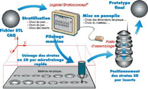Stratoconception
sistemi, inþa yöntemiyle talaþlý imalatýn bir melez
çözümü olan, 3D CAD modelinin kalýn katmanlara ayrýldýktan
sonra parçalar halinde iþlenip sonrasýnda birbirlerine
yapýþtýrýlmasýyla imalat prensibine dayanýr. Kesim ve
iþleme için CNC tezgahlar, lazer veya su jeti kullanýlýr.
Ayný teknoloji orotopetik protezler imal etmek için
de revize edilmiþ ve OrthoStrato Concept® ismiyle kullanýlmaktadýr:
www.cirtes.fr/orthostrato
Daha
sonra sistemin ticari hale getirilmesi için CIRTES'in
lisansý ve iþbirliði ile Charlyrobot
kurulmuþtur. Charlyrobot sistemin eðitim kurumlarýna
tanýtýmý ve satýþýyla da ilgilenmektedir. Bunun haricinde
REALMECA
ve Laser
Technologies firmlarý da Stratoconception sistemi
için tezgah üretmektedirler.
Bu
teknolojinin endüstriye adaptasyonu, metal malzemeler
ve hýzlý kalýp uygulamalarý konusunda ise teknoloji
integratörü olarak rp2i
S.A. faaliyet göstermektedir.
| Charlyrobot,
A4 boyutundan (210 x 300 mm) metrelerce boya kadar
(2100 x 3000 mm) iþleme alanýna sahip cihazlar üretmektedir. |
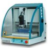 |
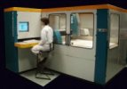 |
Aþaðýda,
Stratoconception tekniðiyle inþa edilmiþ örnek parça
ve kalýplar görülmektedir. Ýnþa malzemesi olarak ahþap
(kontraplak), köpük, plastik ve metal tabakalar kullanýlabilmektedir:
|
| 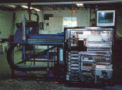Talaþlý
imalat ile inþa tekniðini birleþtirildiði melez çözümlerden
biri olan Custom Motion Firmasý'nýn geliþtirdiði customLAM
tekniðinde müþterinin ihtiyaçlarýna göre özel iþleme merkezi
imal edilmektedir. Her sistemde ayný kontrol bilgisayarý
ve yazýlýmý bulunmakta ama kullanýlacak malzeme ve katmanlarýn
büyüklüðüne göre makine tasarým ve imalatý farklý yapýlmaktadýr.
Kalýn karton, plastik tabakalar, MDF (yüksek yoðunluklu
sunta) lamine ahþap ve benzeri malzemeler kesme ve inþa
iþleminde kullanýlýrlar. Ýstenirse rulodan beslenen esnek
malzemeler de kullanýlabilir. Resimde, bir customLAM
cihazý atölye ortamýnda görülmektedir. |
| Ana
Sayfa | Önceki
Sayfa | Sonraki Sayfa |
|
|